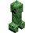
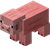
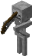
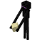
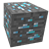

Présentation du jeu
Minecraft est un jeu de type bac à sable où le joueur est invité à collecter un maximum de ressources dans un monde de taille infinie afin de construire tout ce qu’il pourra pour survivre et se défendre contre les monstres.

Le "monde" dans lequel se déroule l’action est un monde généré aléatoirement ! Il vous faudra piocher dans ses ressources pour vous construire vos premiers outils, vos armes et armures. Il faut également assurer votre survie en créant votre nourriture.
En plus du décore, des "mobs" sont également générés. Parmi ceux-ci, on retrouve le cochon, créature passive, que l'on rencontre très fréquemment dans le jeu. On rencontre aussi des vaches, des poules, des villageois...
 La nuit les monstres débarquent ! Assurez-vous de profiter de vos journées ensoleillées pour vous construire un abri, une cabane, une mine, une forteresse ! En réalité n’importe quel type de construction capable de vous protéger de ces monstres assoiffés de sang que sont les zombies, les squelettes, les araignées, les creepers, les sorcières, les endermen, les squelettes du Néther, les pigmen, les blazes, le dragon de l'Ender...
La quête du diamant, ressource rare et inestimable dans ce jeu, animera vos soirées dans les mines que vous aurez vous même creusées ! Attention à ne pas percer une coulée de lave en fusion en creusant ou encore de tomber sur un creeper qui passait par là !
Enfin, le mode multi-joueurs de ce jeu vous permet de partager tout ce bonheur avec vos amis ! Que ce soit dans un mode créatif-collaboratif (pour construire une ville entière par exemple), en mode PvP, ou en mode SMP où vous tentez ensemble de survivre contre les assauts nocturnes des monstres.
Une force du jeu est qu’il est entièrement modifiable, il existe des mods et des textures qui permettent de modifier le gameplay et les graphismes du jeu. Minecraft a donc une durée de vie quasi illimitée. Prenez votre pioche et soyez le bienvenu sur Minecraft : une aventure de pixels dans un monde qui vous appartient et dont la seule limite est l’imagination !